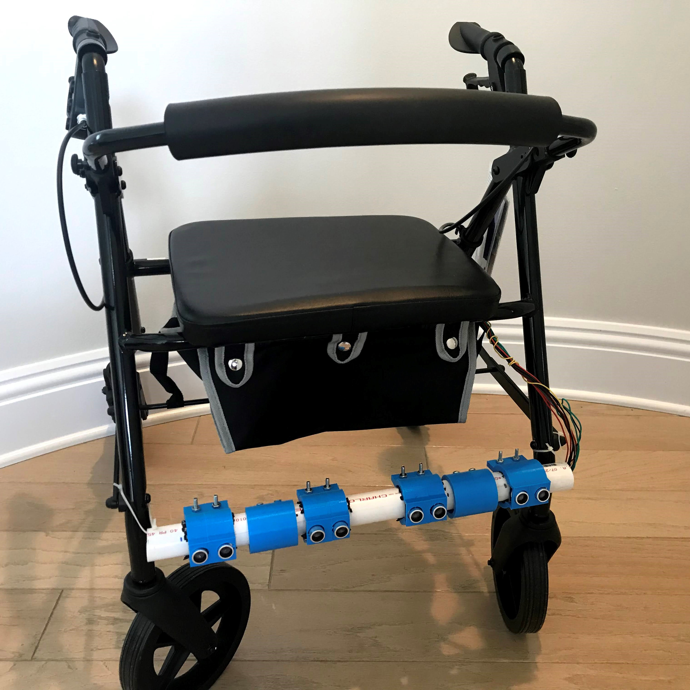
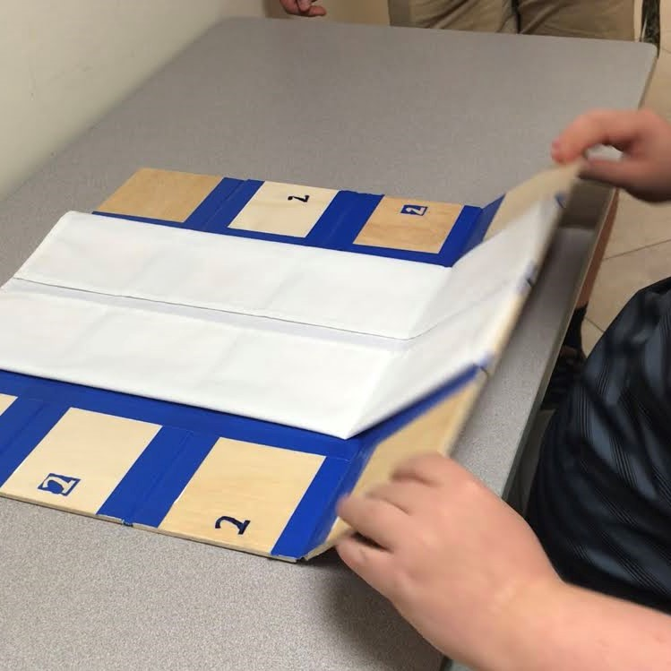

Noah Rubin
Extended Bio
Jump to a section:
Current school: Rosenblatt High School at Donna Klein Jewish Academy (graduating 2021) GO EAGLES!
My favorite scratch program: AWSOME tank sprite from awsome tanks
This is a tank simulator game that a Giuliano, a past student, made after he completed the Maze Game Workshops at
Florence Fuller! How cool is that!?! You can click or press space to shoot, move around with the arrow keys, and change the tank with the numbers.
My favorite part of teaching is seeing the children getting excited when we walk through the door, when they are excited to learn, when they want to do more workshops, and especially when they tell me about the things they coded at home!
Outside of canCode

Here is a picture of me on the Varsity Soccer team for RHS.

We took 2 trips to Washington DC for AIPAC's national conference.

Here I am with my team and robot for the 2020 VEX competition.

Here is a picture of me at the ISENSE Lab during one of our visits to FAU, as a part of the affiliation between our high school and the college.
Featured Engineering Projects
I've chosen to feature 2 projects from each category, but in total, I've worked on over 10 engineering projects over the course of my high school career.
DKJA/FAU Affiliation Projects:
Smart Walker
2019-2020
Our team partnered with Sonata, a local nursing home, to solve a problem. After discussing problems that their residents faced with one of the nurses, we decided to tackle residents walking into walls, chairs, and other obstacles while using their walkers. Unfortunately, due to COVID19, we were unable to test the device and make improvements.
Skills:
- Project Management
- CAD
- Arduino
Click here to read more about the Smart Walker.
Lego Sorter
2018-2019

In my sophomore year, I lead our team in the development of a Lego Sorter. The sorter was very technical, and our team learned a lot. The project required the use of both a Raspberry Pi and an Arduino. We completed our MVP of sorting LEGOs by color, and the sorter was designed in such a way that it is easily expandible to more colors.
Skills:
- Project Management
- OpenCV
- Python
- Stepper Drivers
- CAD
Internships:
FAU ID-System
2018-2020

I worked on an independent internship with Mr. Perry Weinthal from FAU to develop a full attendance system. The system includes both a registry module and attendance modules that are at the entrances to classrooms.
Skills:
- ESP8266
- Raspberry Pi
- Python
- Google Sheets API
- CAD
Mobintel
2020
I worked as an intern with 2 of Dr. Hallstrom's Ph.D. students on the Mobintel project. This project is working with the city of West Palm Beach to study how people move within the city. The project has deployed many sensors within the city to track pedestrian cell phone signal strength. As part of my internship, I worked on finding evenly spaced points within a 3 x 3 Meter square using Lloyd's algorithm.
Skills:
- Data Science
- Jupyter Lab
- GPS
Click here to read more about the Mobility Intelligence Project.
Other Projects
Boost Board
2019-2020
Our team worked with Andy, an adult with Down Syndrome, to help him more accurately and efficiently fold table napkins in order for him to get a job for a nearby restaurant (Grand Lux Cafe). The Boost Board Napkin Folder was created to provide a structured folding template to enable Andy to begin working at the restaurant. We were awarded $1,000 and 2nd place in ITEEA's National Reach Challenge.
Skills:
- Project Management
- Working with a Client
- Design
Click here to read our technical paper and watch our video about the Boost Board.
TouchTime
2017-2018

For our Freshman engineering class, we designed a digital clock for the blind. The clock displays the time in the HH:MM form and can be set to use 12 hour time or 24 hour time. The clock is wall powered and uses an Arduino Uno to do the processing and servo controls. Servos move rotors that have 10 faces, one for each number in braille.
Skills:
- Arduino
- I2C
- CAD
Awards and Recognitions
Diller Teen Awardee
2020
In 2020, I was selected out of hundreds of Jewish teen applicants to be awarded a $36,000 scholarship along with 14 other teenagers.
REACH Challenge 2nd Place
2019
For our work on the Boost Board (above), my partner Yakov Wahnich and I won 2nd place in ITEEA's National High School REACH Design Challenge.
Youth Men with Caring Hearts Award
2019

The Florence Fuller Child Development Centers nominated me for the Youth Men with Caring Heart Award for bringing canCode workshops to their students. To date, we have tought over 100 of their students.
Read about the award here
Philanthropy Tank Finalist
2018
In 2018, I was awarded a $15,000 grant to turn canCode into a non-profit. Since the Philanthropy Tank, canCode has grown from 1 center to over 10 centers, purchased laptops and neccesarry equiptment to serve low-income areas, and become a registered 501c3.